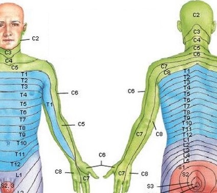
2024 환자 교육자료
1 경추질환
목(경추)의 병인은 단순염좌, 디스크 내장증, 디스크탈출과 방사통, 후관절증, 경수척수증이 있을 수 있습니다.
또한 경추부 구조물의 손상이 뒤통수, 뒷목, 어깻죽지와 승모근, 어깨와 견갑골에 전형적으로 통증을 만듭니다.
논문에 발표된 그림은 아래와 같습니다.
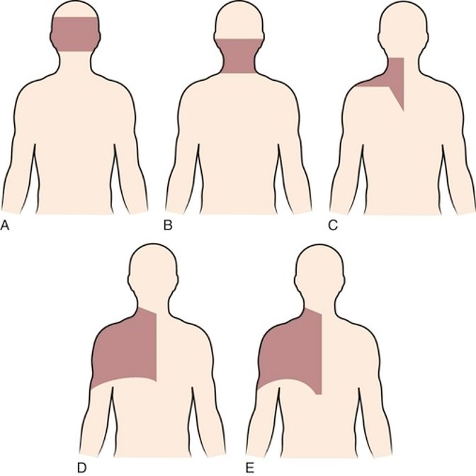
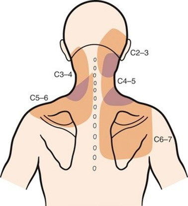
| 디스크 손상으로 인한 연관통 부위 | 후관절로 인한 연관통 부위 |
|---|---|
목 디스크에 나쁜 자세란 척추의 ’후만자세’와 머리가 몸의 중심을 벗어난 자세로서,
고개를 숙인자세, 고개를 앞으로 내민자세, 허리를 굽혀 머리가 앞으로 나간 상태, 한방향으로 목을 돌리고 있는 자세, 높고 딱딱한 배게사용를 오랫동안 하지 않는 것입니다.

목을 앞으로 구부렸을 때 힘을 받으면 수핵이 뒤로 탈출되거나 수핵이 뒤로 밀리면서 섬유륜이 찢어지며 발생합니다. 큰 힘을 갑자기 받아도 발생하지만, 작은 힘을 오랬동안 받아도 발생합니다.
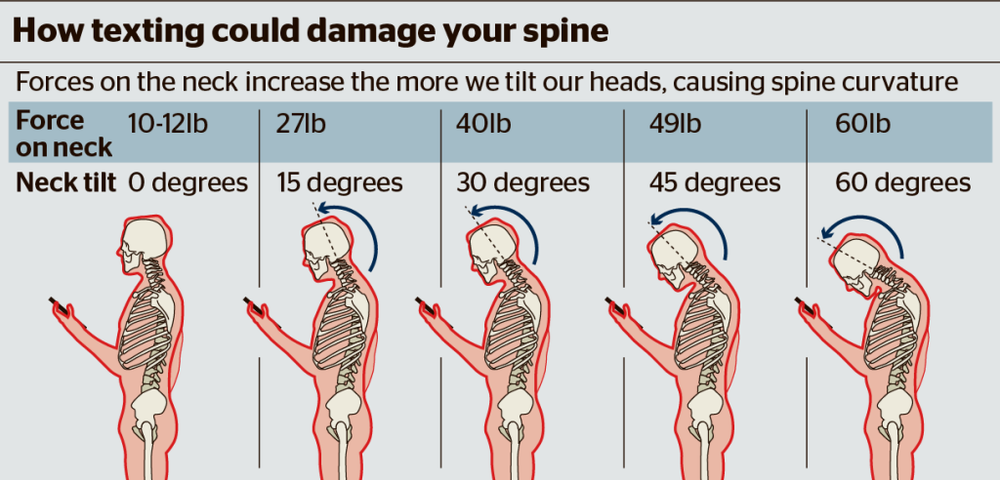
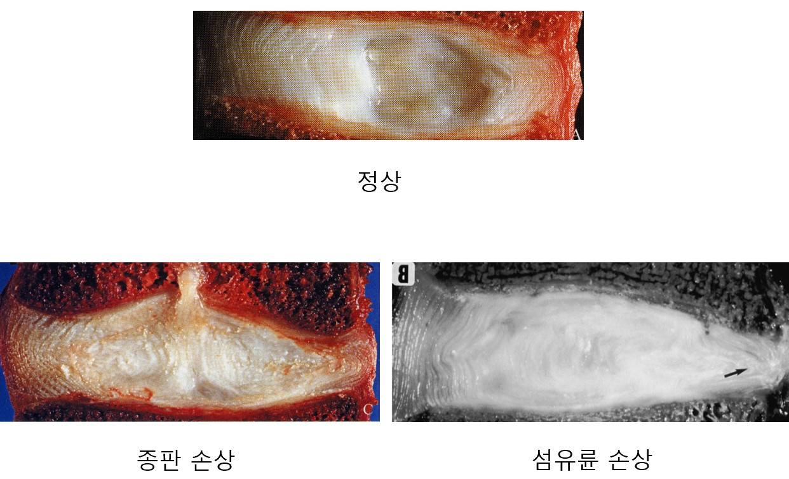
디스크에 나쁜 자세를 피하고 좋은 자세와 운동을 하는 것이 근본적인 치료입니다.
좋은 자세: 전만자세 유지, 고개내밀지 않기, 숙이지 않기
경부 재활 1단계: 척추위생 지키기, 스스로 머리위치 자주 확인하기, 맥켄지 신전운동, 견갑골 후인운동.
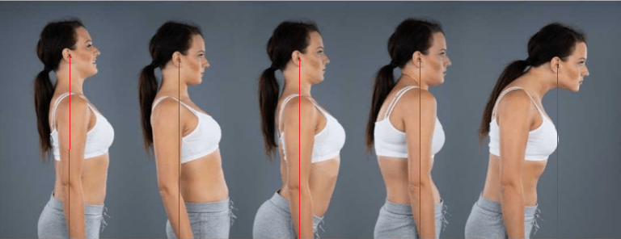
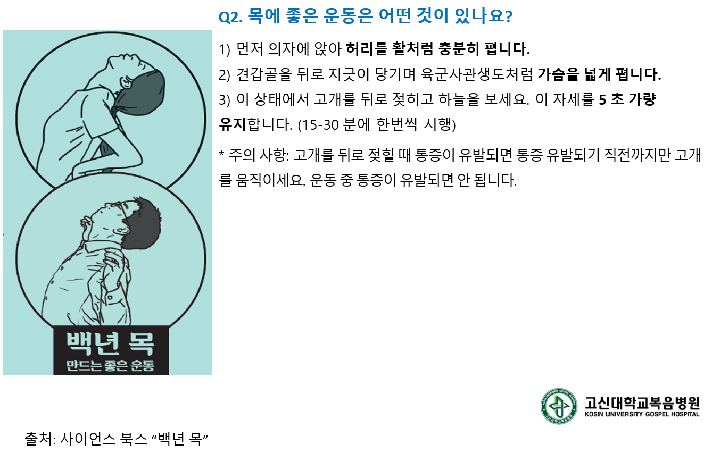
경부 재활 2단계: 경부의 굴곡, 신전, 측굴 근육의 등척성운동, 탄력밴드 등척성 운동.
초기에는 절대 하지 마세요
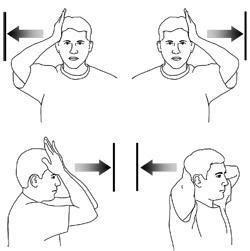

통증이 심할 때 소염진통제를 통해 통증을 조절할 수 있습니다.
소염진통제로 해결되지 않을 경우 스테로이드 주사를 통해 신경 뿌리의 염증을 줄여서 통증을 가라앉힐 수 있습니다.

팔의 힘이 중요한 정도로 떨어지거나, 다리 힘이 약해지거나 대소변 보는데 장애가 발생할 경우 수술을 고려해볼 수 있습니다.
2 요추질환
허리(요추)의 병인은 단순염좌, 디스크 내장증, 디스크탈출과 방사통, 후관절증, 척추관협착증 등이 있을 수 있습니다.
또한 요추부 구조물의 손상이 허리, 골반, 엉치, 엉덩이, 사타구니에 전형적으로 통증을 만듭니다.
논문에 발표된 그림은 아래와 같습니다.

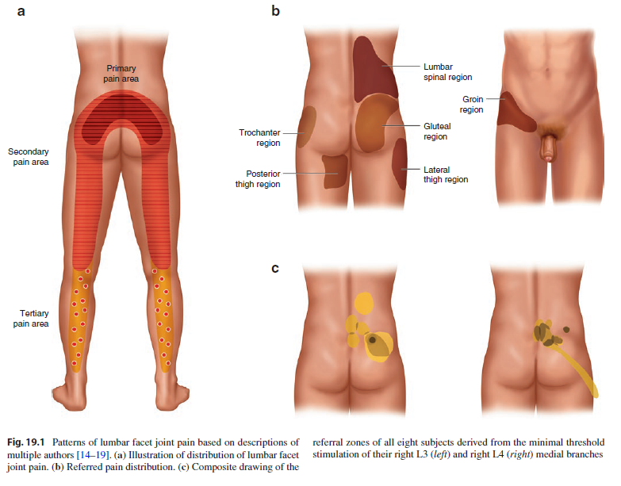
디스크 탈출증으로 인한 방사통은 다리로 뻗쳐나가는 통증을 느낄 수 있습니다.


허리를 앞으로 구부렸을 때 힘을 받으면 수핵이 뒤로 탈출되거나 수핵이 뒤로 밀리면서 섬유륜이 찢어지며 발생합니다.
큰 힘을 갑자기 받아도 발생하지만, 작은 힘을 오랬동안 받아도 발생합니다.
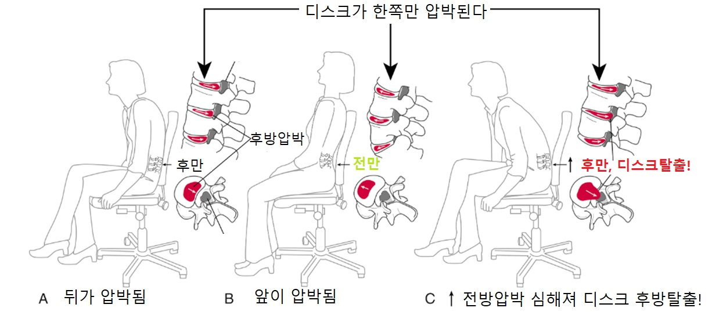
윌리엄스 운동, 윗몸 일으키기, 다리 들어 올리기 등 과도한 요추의 굴곡신전 반복.

일상생활 중의 통증에서 벗어나는 단계 입니다.
척추를 ’전만자세’로서 24시간 유지하고, 허리를 굽혔다 펴는 것을 반복하거나 굽히는 자세를 오래 하지 않은 것 입니다.
신경쓰지 않아도 자세가 유지되도록 습관화 시켜야합니다. 일반적으로 습관을 익히는 데 평균 66일이 걸립니다.
습관화 되면 재발을 방지할 수 있습니다.
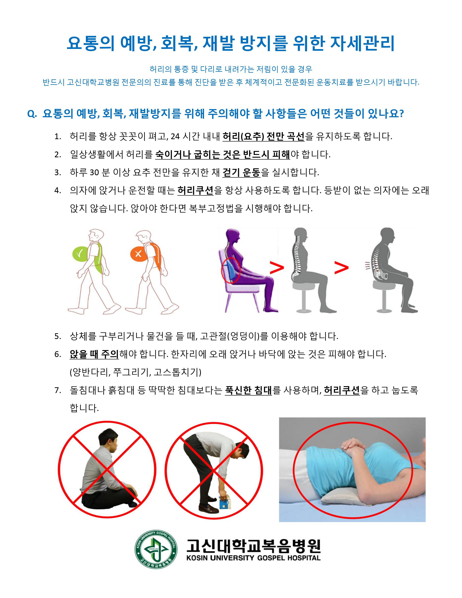

척추위생 지키기, 맥켄지 신전운동, 요추살림 걷기
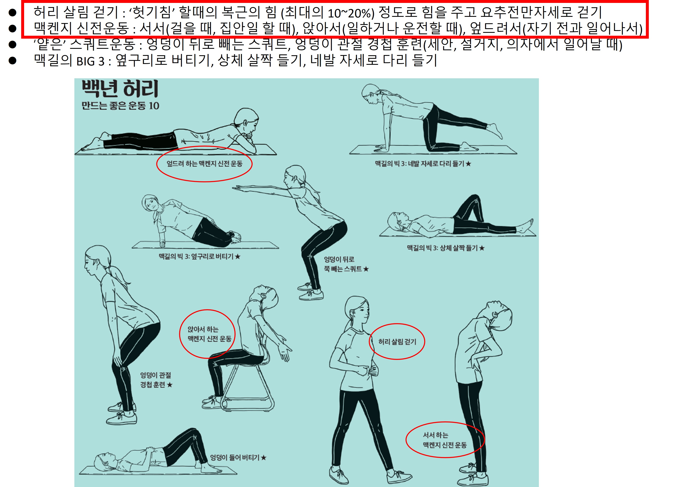
광배근 운동, 엉덩이 운동, 엉덩관절 경첩훈련

맥길의 빅3(사이드브릿지, 상체살짝들기, 버드독자세, 플랭크)
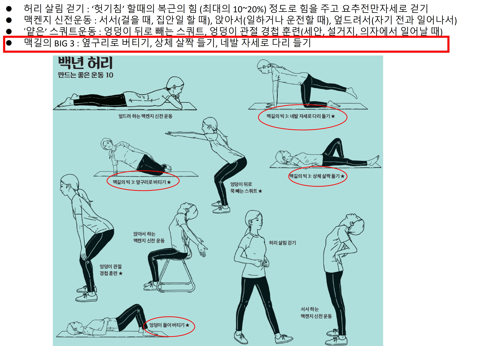
통증이 심할 때 소염진통제를 통해 통증을 조절할 수 있습니다.
소염진통제로 해결되지 않을 경우 스테로이드 주사를 통해 신경 뿌리의 염증을 줄여서 통증을 가라앉힐 수 있습니다.
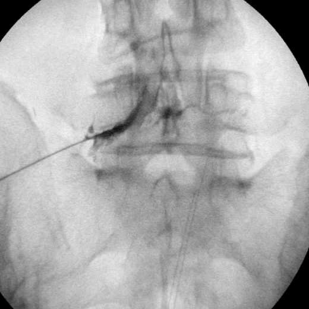
다리의 힘이 중요한 정도로 떨어지거나, 대소변 보는데 장애가 발생할 경우 수술을 고려해볼 수 있습니다.
3 어깨질환
어깨 통증의 흔한 원인은 유착성 관절낭염, 회전근개 질환, 석회성 힘줄염 등이 있을 수 있습니다.

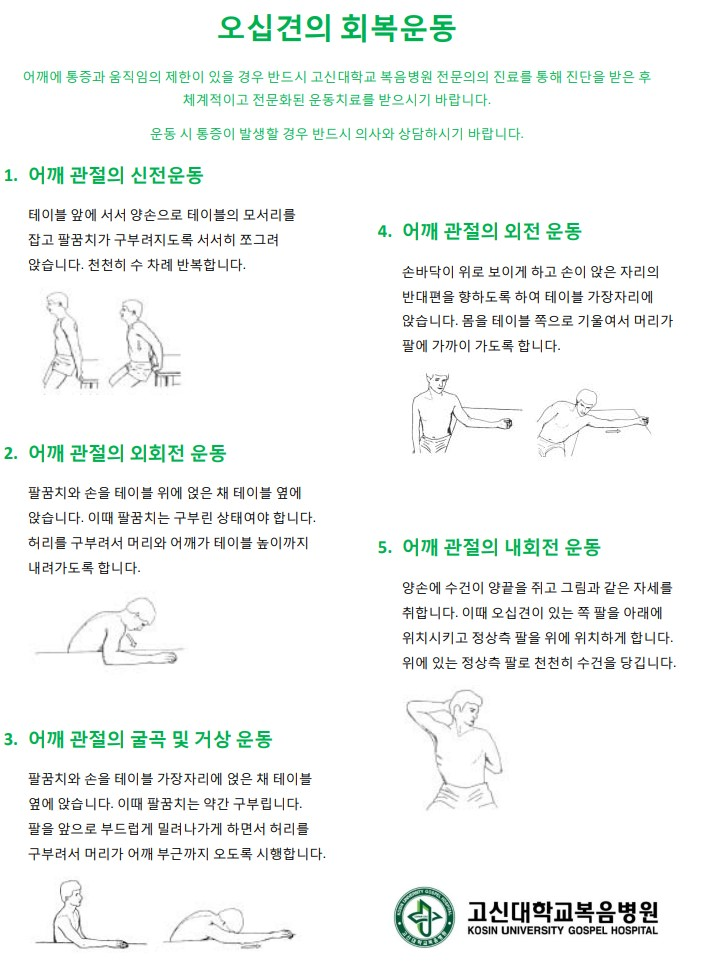
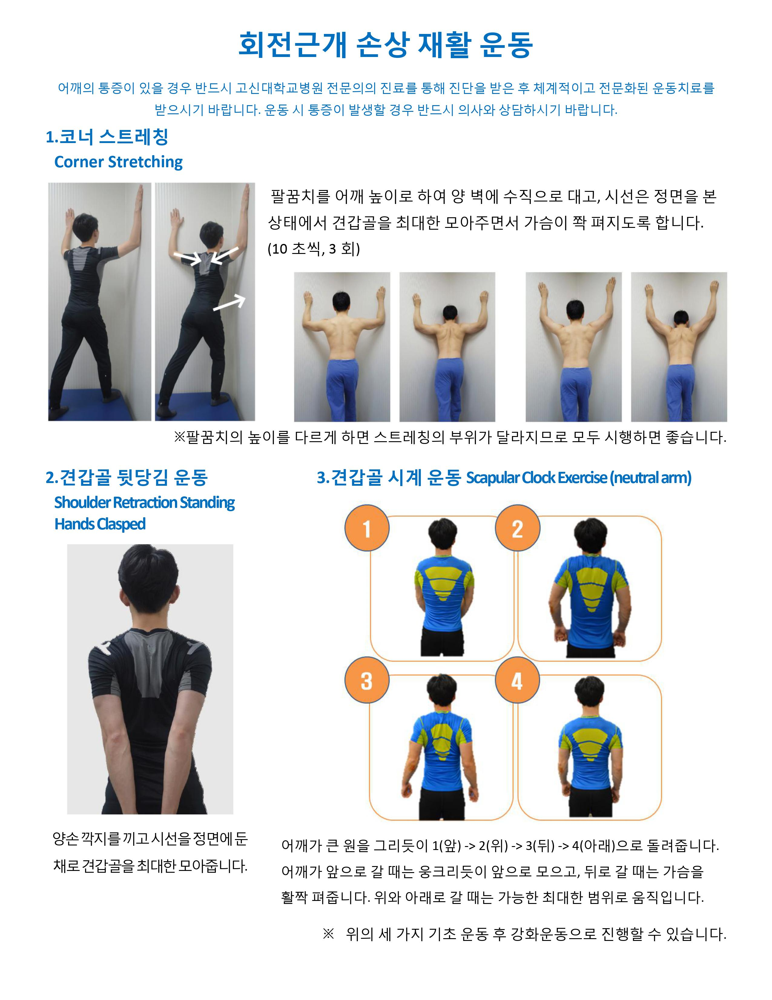
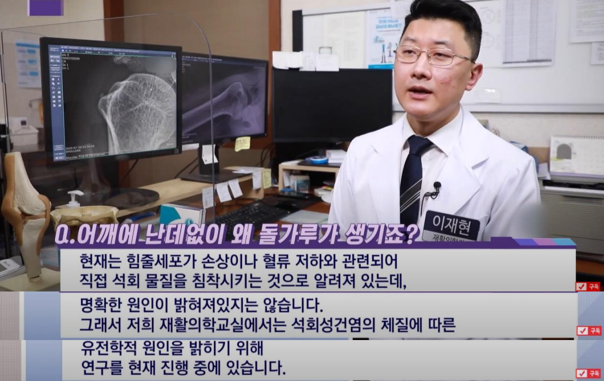
4 무릎질환
무릎 통증의 흔한 원인은 생리적과사용으로 인한 스트레스, 퇴행성관절염, 활액막염, 그 외 원인으로 인한 관절염 등이 있을 수 있습니다.
무릎 관절에 힘이 많이 가해져서 뼈에 스트레스가 가해진 상태. 대사 증가와 미세골절이 있어 통증에 민감해진 상태
무릎관절의 연골의 손상, 뼈의 골극 형성, 관절공간의 감소로 특징되는 질환. 오랜시간 동안 반복된 손상이 누적되어 보이는 것
무릎관절 내부 구조물의 손상이 유발하는 관절 활액막의 염증 통증에 민감한 조직이라 심한 통증을 만들고, 구조적 손상없이도 주된 통증의 원인이 되기도함. 심한 경우 스테로이드 주사가 치료 효과가 있다.
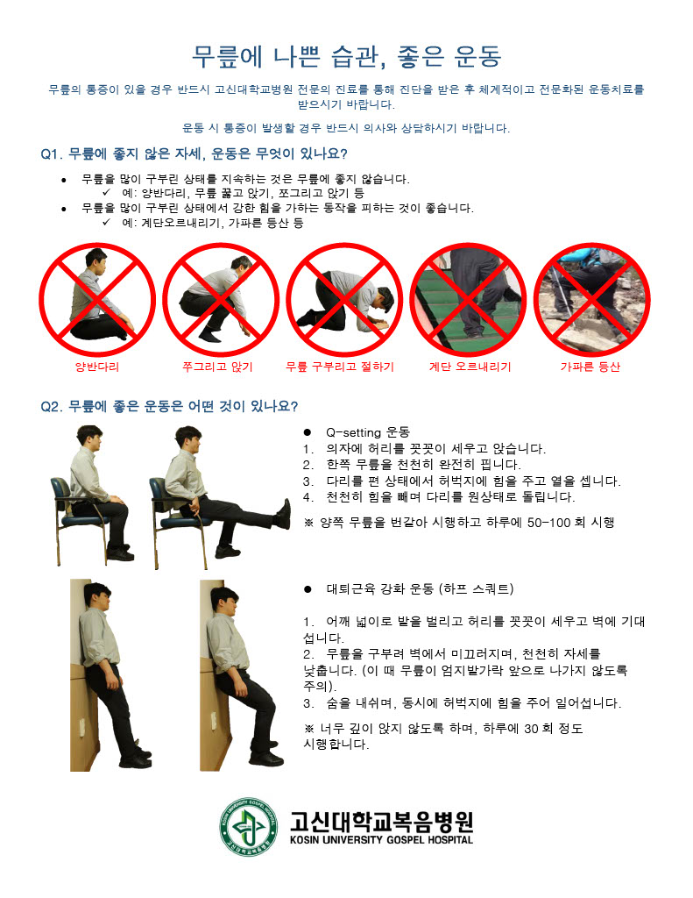
5 팜플렛 모음

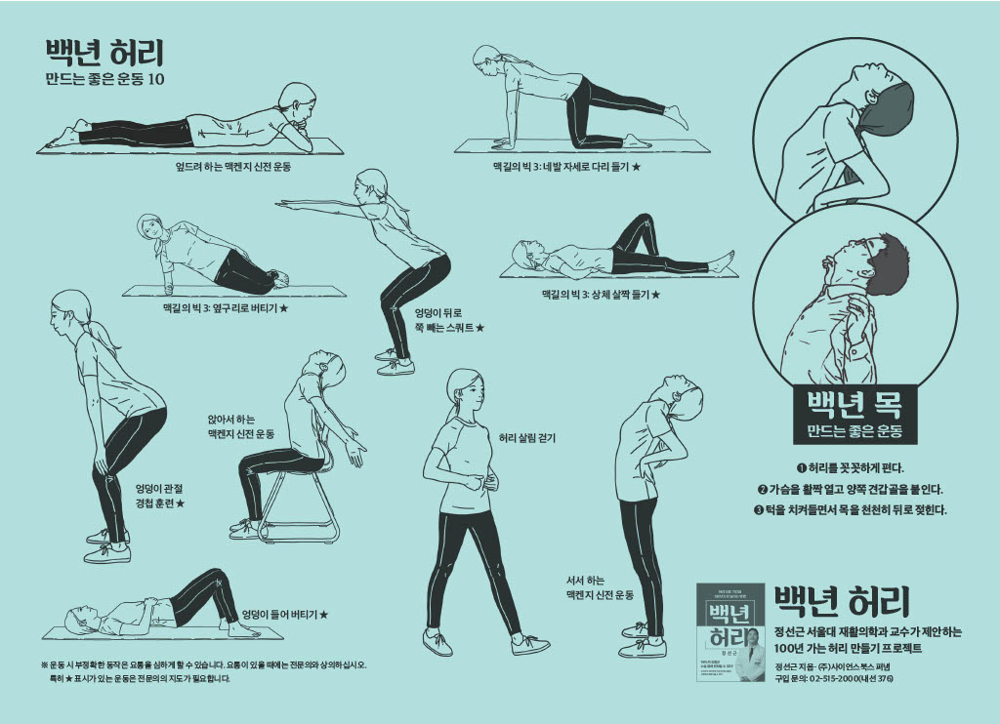
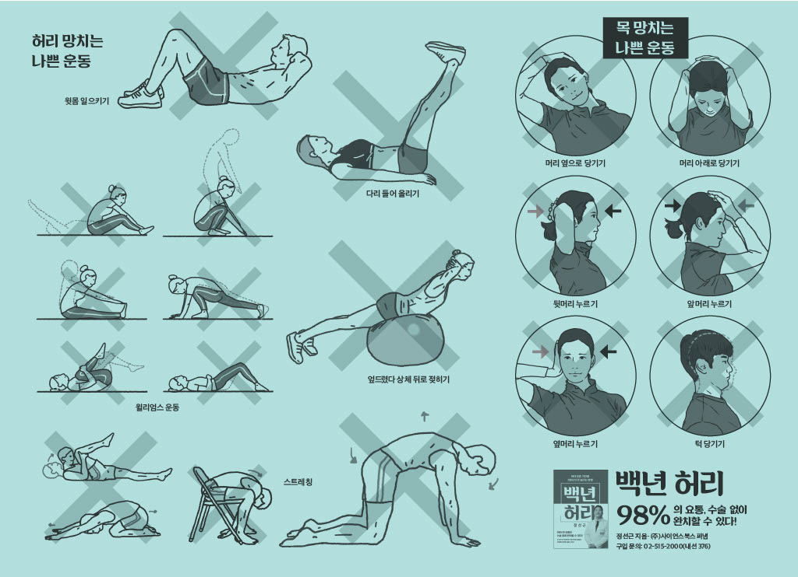